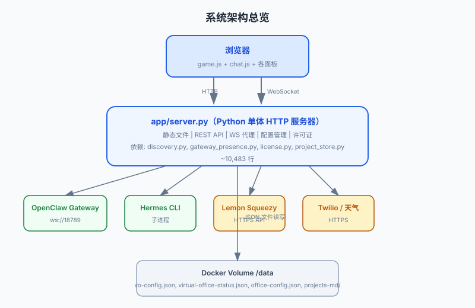

项目全景概览
一个自托管的像素风 AI Agent 可视化工作空间。将 OpenClaw/Hermes Agent 的后台运行转化为可视化的办公室场景，支持实时 presence、聊天、办公室编辑、Agent Browser 等功能。
前置知识
了解基本的 Web 开发（HTTP、WebSocket、JavaScript）即可。不需要 OpenClaw 或 Hermes 的使用经验。
项目定位
产品类别：自托管 AI Agent 可视化工具 / 开发辅助工具
目标用户：OpenClaw 用户、AI Agent 开发者、自托管爱好者
核心问题：Agent 运行时是"黑盒"，用户只能通过日志滚动观察。Virtual Office 将 Agent 活动转化为可视化像素场景，让不可见的工作变成可见的办公室活动。
竞品差异化：像素艺术风格 + 实时 Canvas 渲染 + 直接 Agent 对话 + 可编辑办公室布局。
证据来源：README.md 首行描述 "A self-hosted retro pixel-art AI workspace for OpenClaw"
技术栈
| 层级 | 技术 | 证据 |
|---|---|---|
| 后端 | Python 3.12, websockets, http.server, psutil, pynvml | app/Dockerfile, app/server.py |
| 前端 | Vanilla JavaScript（零框架）, HTML5 Canvas, CSS3, Google Fonts (Press Start 2P) | app/index.html, app/game.js |
| 外部集成 | OpenClaw Gateway (WS), Hermes CLI, Lemon Squeezy, Twilio, KasmVNC + Chromium CDP | app/server.py, app/discovery.py |
| 部署 | Docker Compose, 多架构镜像 (amd64/arm64), GitHub Container Registry | docker-compose.yml, .github/workflows/docker-publish.yml |
| 营销站 | Nginx Alpine（独立 Docker 容器） | website/Dockerfile |
架构模式

图：浏览器 → Python 单体 HTTP 服务器 → 外部服务的三层架构。所有前端 JS/CSS 由同一 Python 进程提供。
部署模式
容器化单体（Docker Compose），可选多容器（Agent Browser）
前端架构
Vanilla JS 多文件模块化，零构建工具链，直接由 Python HTTP server 提供
数据层
文件系统 JSON（无关系型/文档数据库），存储在 Docker Volume
/data 中
数据流关键路径
| 数据流 | 路径 | 协议 |
|---|---|---|
| Agent 状态流 | OpenClaw Gateway WS → gateway_presence.py → server.py → 前端 poll | WebSocket + HTTP |
| Agent 聊天流 | 前端 → server.py → Gateway WS → OpenClaw Agent → 流式响应 → 前端 | WebSocket |
| Hermes 聊天流 | 前端 → server.py → hermes -z 子进程 → stdout → 前端 | HTTP 轮询 |
| 办公室配置流 | 前端编辑器 → POST /api/office-config → server.py → /data/office-config.json | HTTP |
| 项目数据流 | project_store.py → Markdown 文件 → server.py REST API → 前端 projects.js | HTTP |
商业模式
Freemium 模式：
- 免费 Demo：限制 3 个 Agent，禁用 Browser/SMS/Cron/Whisper 功能
- 一次性买断：通过 Lemon Squeezy 激活许可证，激活后完全离线使用
证据来源：app/license.py 中的 DEMO_LIMITS = {"maxAgents": 3, ...} 和 Lemon Squeezy API 调用
注意
许可证系统的 Lemon Squeezy 验证密钥（_EXPECTED_STORE_ID、_EXPECTED_PRODUCT_IDS）当前为 None/[]，可能是有意留空待生产配置。
延伸阅读
- 目录结构与模块职责 — 每个目录和文件的详细职责
- 整体架构与依赖关系 — 部署架构、模块通信、数据流
- 服务器启动：三线并行 — 从入口出发理解系统如何运转